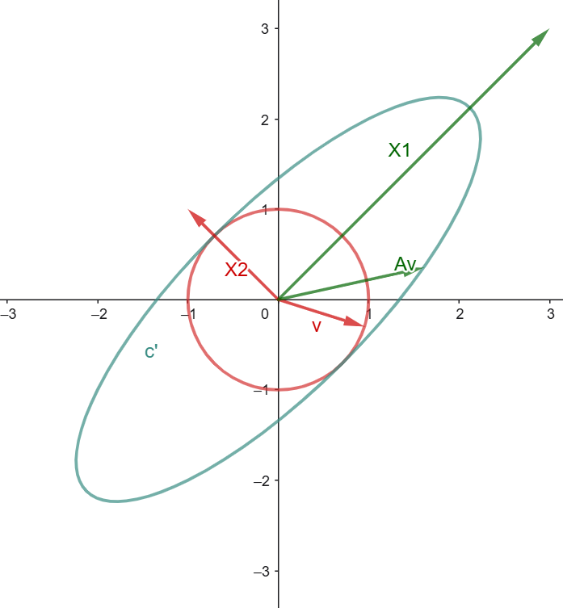
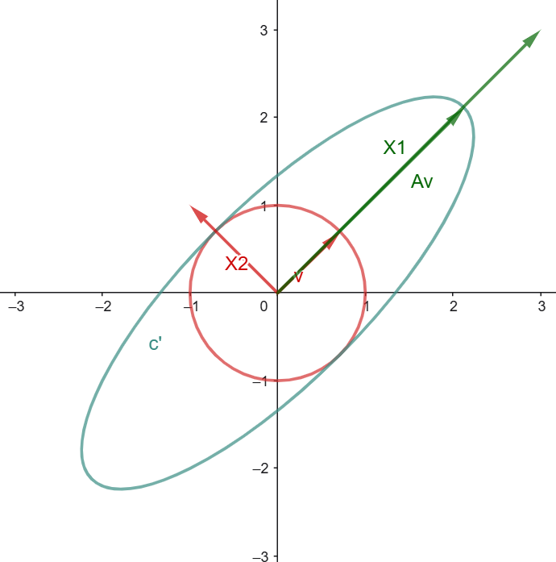

Eigenvalues- Eigenvectors, Matrix Decomposition and Principal Component Analysis
Geometrically, a matrix acts as a spatial transformation that rotates, stretches, or squishes space. Eigenvectors are the special directions that do not rotate when transformed by a matrix, and eigenvalues are the scaling factors that tell you how much those vectors stretch, shrink, or flip.
Definition The Fundamental EquationAv=λv
A (Matrix): The linear transformation operator (n×n).
v (Eigenvector): A non-zero vector whose directional orientation remains invariant after transformation.
λ (Eigenvalue): A scalar multiplier representing how much v is scaled.
Example Given MatrixA=211121112
Solutiondet(A−λI)=2−λ1112−λ1112−λ=0⇒λ1=4,λ2=1,λ3=1 are the eigenvalues
λ=1: x1+x2+x3=0⟹x1=−x2−x3 Because you have 1 equation and 3 variables, there are 2 free variables (x2 and x3). This means the repeated eigenvalue generates two linearly independent eigenvectors.
Set x2=1,x3=0⇒v2=−110. Set x2=0,x3=1⇒v3=−101
Example Consider a matrix A=(2112), eigenvalues are λ1=3,λ2=1 and corresponding eigenvectors are v1=(11),v2=(−11) The red circle represents all unit vectors (vectors with length = 1) as input. The blue ellipse represents what happens when the matrix A acts on space. It distorts and stretches the red unit circle into an elongated ellipse.


Figure 12. Visualization of what eigenvector
When matrix A transforms v, it becomes the green vector Av. Notice that Av changed both its length and its direction. But if we watch closely, there are a few special directions where the vectors do not rotate at all—they just get pushed straight out or squashed along the exact same line.
A real square matrix A is symmetric if it is equal to its transpose:A=AT Key Properties:
Real Eigenvalues: All eigenvalues (λi) of a real symmetric matrix are guaranteed to be real numbers.
Orthogonal Eigenvectors: Eigenvectors corresponding to distinct eigenvalues are mutually orthogonal.
Definition A matrix A is said to be an orthogonal matrix if ATA=I, or A−1=AT.
Definition By the Spectral Theorem, any real symmetric matrix A∈Rn×n can be orthogonally diagonalized:A=QΛQT
where: Q is an orthogonal matrix whose columns are orthonormal eigenvectors q1,q2,…,qn (meaning QTQ=I, or Q−1=QT). Λ is a diagonal matrix containing the real eigenvalues λ1,λ2,…,λn along its main diagonal.
Given an n×n real symmetric matrix A, we have to find an orthogonal matrix Q and a diagonal matrix Λ such that A=QΛQT.
Step 1: Compute the Eigenvalues λ1,λ2,…,λn.
Step 2: Find the Basis of Eigenvectors vi′s for Each Eigenvalue λi′s.
Step 3: Orthonormalize the Eigenvectors: Case A: Eigenvectors corresponding to different eigenvalues are automatically orthogonal. We only need to normalize each eigenvector by dividing by its magnitude: qi=∥vi∥viCase B: Eigenvectors from the same eigenspace (i.e., Repeated Eigenvalues) are not guaranteed to be mutually orthogonal. Apply the Gram-Schmidt process to the basis vectors of that eigenspace to make them orthogonal.Normalize all resulting orthogonal vectors to unit length: qi=∥ui∥ui.
Step 4: Construct Matrices Q=[q1q2…qn] and Λ=λ10⋮00λ2⋮0……⋱…00⋮λn
Example Orthogonally diagonalize A=[4221] into A=QΛQT.
Because the orthonormal eigenvectors {q1,q2,…,qn} form a complete basis for Rn, any arbitrary vector x can be uniquely written as a linear combination of these basis vectors:x=c1q1+c2q2+⋯+cnqnTo find each coordinate coefficient ci, we take the inner product (dot product) of x with qi: ci=qiTx Thus, expanding x in terms of the eigenvector basis gives:x=(q1Tx)q1+(q2Tx)q2+⋯+(qnTx)qn=i=1∑n(qiTx)qi Now, apply the linear transformation A to the vector x:Ax=A(i=1∑n(qiTx)qi)=i=1∑n(qiTx)AqiSince each qi is an eigenvector of A satisfying Aqi=λiqi:Ax=i=1∑nλi(qiTx)qi By factoring out x from the sum above, the matrix A itself can be expanded into a sum of rank-1 projection matrices:A=λ1q1q1T+λ2q2q2T+⋯+λnqnqnT=i=1∑nλi(qiqiT)
qiqiT is an orthogonal projection operator that projects any vector onto the 1D subspace spanned by the basis vector qi.
λi acts as a scaling factor along that specific basis direction.
Insight
When a symmetric matrix A transforms a vector x via Ax=QΛQTx, it executes three distinct steps using the eigenvector basis:
Change of Basis (QTx): Projects the input vector x onto the new orthogonal coordinate axes (the eigenvectors qi). This computes the scalar coordinates ci=qiTx along each eigenvector axis.
Independent Scaling (Λ): Stretches or compresses each coordinate independently by multiplying it by its corresponding eigenvalue λi.
Reconstruction / Change Back to Standard Basis (Q): Recombines the scaled components along the direction of each eigenvector to yield the transformed vector in the original coordinate system.
Example Consider A=[3113]
Eigenvalue λ1=4 with normalized eigenvector q1=[2121]
Eigenvalue λ2=2 with normalized eigenvector q2=[−2121]A=λ1(q1q1T)+λ2(q2q2T) Component 1 (Along q1): q1q1T=[2121][2121]=[21212121] Scaling by λ1=4:λ1(q1q1T)=4[21212121]=[2222] Component 2 (Along q2):q2q2T=[−2121][−2121]=[21−21−2121]Scaling by λ2=2:λ2(q2q2T)=2[21−21−2121]=[1−1−11] Reconstructing A:λ1(q1q1T)+λ2(q2q2T)=[2222]+[1−1−11]=[3113]=A Now let’s see how A transforms a sample input vector x=[51].Direct Calculation:Ax=[3113][51]=[168] Interpretation via Eigenvector Basis Expansion:
Project x onto the Eigenvector Basis (Get Coordinates). Compute the scalar coordinates c1 and c2 by taking dot products with the unit basis vectors:c1=q1Tx=[2121][51]=26c2=q2Tx=[−2121][51]=2−4
So, in the eigenvector basis, x is represented as:x=(26)q1+(2−4)q2 Scale Each Component by Eigenvalues: Multiply each coordinate by its respective eigenvalue λi:
Along q1: λ1⋅c1=4⋅(26)=224
Along q2: λ2⋅c2=2⋅(2−4)=2−8
Step C: Reconstruct the Final Vector Ax=(224)q1+(2−8)q2⟹Ax=[1212]+[4−4]=[168]
Key takeaway
Instead of viewing matrix multiplication Ax as a single black-box calculation, basis expansion reveals that A:
Breaks x down into independent components along the principal axes q1 and q2.
Scales each component independently by its eigenvalue (×4 along q1, ×2 along q2).
Adds the scaled components together to form the output vector [168].
Definition The Singular Value Decomposition factors any real m×n matrix A into three matrices:A=UΣVT
U (m×m): An orthogonal matrix containing the left singular vectors (eigenvectors of AAT).
Σ (m×n): A diagonal matrix containing the singular values σi=λi, sorted in descending order.
V (n×n): An orthogonal matrix containing the right singular vectors (eigenvectors of ATA).
Example Find the SVD of the 2×2 matrix:A=[300−2]
SolutionATA=[300−2][300−2]=[9004] Eigenvalues of ATA: λ1=9,λ2=4 Eigenvectors of ATA:
For λ1=9: v1=[10], for λ2=4: v2=[01]⇒V=[1001]⟹VT=[1001] Calculate Singular Values (Σ)The singular values σi are the positive square roots of the eigenvalues λi:σ1=9=3σ2=4=2Construct the matrix Σ:Σ=[σ100σ2]=[3002] Compute Left Singular Vectors (U)The columns of U are calculated using the formula:ui=σi1AviFirst Column (u1):u1=31[300−2][10]=31[30]=[10] Similarly u2=21[300−2][01]=21[0−2]=[0−1]U=[100−1] Thus A=UΣVT=[100−1][3002][1001]
Example Let’s take the rank-3 matrix:A=112211321 Since all rows are linearly independent (det(A)=2=0), the matrix has full rank (Rank = 3). It has 3 non-zero singular values. First, calculate ATA:ATA=123112211112211321=6575697914λ1≈23.518,λ2≈2.115,λ3≈0.367v1≈0.4070.4980.766,v2≈−0.840−0.2220.495,v3≈0.359−0.8380.313V≈0.4070.4980.766−0.840−0.2220.4950.359−0.8380.313 Singular Values (Σ) σ1=23.518≈4.850,σ2=2.115≈1.454,σ3=0.367≈0.606 Thus Σ≈4.8500001.4540000.606 Left Singular Vectors (Uui=σi1AviU≈0.7630.5020.4280.138−0.051−0.968−0.6240.2430.318 Hence A=UΣVT≈0.7630.5020.4280.138−0.051−0.968−0.6240.2430.3184.8500001.4540000.6060.407−0.8400.3590.498−0.222−0.8380.7660.4950.313
Example Consider the matrix of rank 1: A=1−12102−24203−36304−4840 The above matrix can be expressed as: A=1−1210[1234]
Similarly for the second example of rank 3 matrix, the given matrix A can be expressed as: A≈4.8500.7630.5020.428[0.4070.4980.766]+1.4540.138−0.051−0.968[−0.840−0.2220.495]+0.606−0.6240.2430.318[0.359−0.8380.313]
Key takeaway
Taking only the first two singular values (σ1 and σ2) discards the third outer product component, yielding the optimal Rank-2 approximation (A2) of the original matrix A: A=112211321≈A2=1.3381.0532.0271.7981.2281.3472.9341.8280.893
Key takeaway
An m×n matrix requires m⋅n stored values. Representing it as a rank-1 outer product of two vectors requires only m+n values. For a 1000×1000 matrix, storage drops from 1,000,000 numbers down to just 2,000—a 99.8% reduction.
Tiny Matrices (3×3): Full SVD adds mathematical overhead because storing the three matrices (U,Σ,VT) takes 21 values. You only save space on a 3×3 matrix if you truncate to Rank-1 (storing 7 values).
Where SVD Truly Shines (Large Matrices): For an m×n matrix, Rank-k SVD requires k(1+m+n) values instead of m⋅n. For a 1000×1000 matrix (1,000,000 original values), keeping k=20 singular components requires only 20(1+1000+1000)=40,020 values, resulting in a 96% storage reduction.
Example Imagine a high resolution 1024×1024 image (See Figure 13). Mathematically, it is a matrix A containing 1,048,576 individual pixel values. Storing, transmitting, or processing every single pixel individually is computationally expensive. However, real world images aren’t random noise neighboring pixels share patterns, shapes, and gradients. Singular Value Decomposition (SVD) exploits this redundancy by factorizing the original matrix into its most fundamental building blocks:A=UΣVTInstead of storing all 1+ million numbers, SVD ranks these patterns by importance (their singular values) and allows us to construct a low-rank approximation Ar:Ar=UrΣrVrT
Figure 13. Comparison of the original 1024×1024 image (1.98 MB) and the compressed 1024×1024 images obtained using Compression Rank 25 (113 KB), 50 (135 KB) and 75 (148 KB).
By retaining only the top r most dominant singular values and their corresponding singular vectors:
Original Matrix Storage: 1024×1024=1,048,576 values
SVD Rank-r Storage: 1024r+r+1024r=2049r values
If we set r=75:Storage Required=2049×75=153,675 valuesThe Result: We preserve over 85% to 90% of the visual quality while storing less than 15% of the original data.
Key takeaway
A massive matrix may look overwhelmingly complex, but SVD reveals that most of its critical information is concentrated along a remarkably small set of dominant directions.
PCA transforms a dataset containing p potentially correlated variables into a smaller set of k (k≤p) uncorrelated, orthogonal variables called Principal Components (PCs).
These principal components are constructed as linear combinations of the original variables in such a way that:
The first principal component captures the maximum possible variance present in the dataset.
Each subsequent component captures the maximum remaining variance subject to the constraint that it is orthogonal (uncorrelated) to all preceding components.
Mathematically, PCA rotates the original coordinate axes to align with the directions of maximum variance in the data feature space.
Procedure: For a given matrix Ap×n, i.e., p features and n observations
Step 1: Compute the Mean Vector (xˉ), xˉi = Mean of feature i calculated across all n samples:xˉi=n1k=1∑nxi,kXi,k=(xi,k−xˉi) = Mean-centered scalar value for feature i in sample k.
Construct the p×n mean-centered data matrix Aˉ:Aˉ=X1,1X2,1⋮Xp,1X1,2X2,2⋮Xp,2X1,3X2,3⋮Xp,3……⋱…X1,nX2,n⋮Xp,np×n
Step 2: Compute the Covariance Matrix (Σ): Method 01:Σcov=Σ1,1Σ2,1Σ3,1⋮Σp,1Σ1,2Σ2,2Σ3,2⋮Σp,2Σ1,3Σ2,3Σ3,3⋮Σp,3………⋱…Σ1,pΣ2,pΣ3,p⋮Σp,p Diagonal Elements (i=j): Represents the variance of feature i:Σi,i=Var(xi)=n−11k=1∑nXi,k2Off-Diagonal Elements (i=j): Represents the covariance between feature i and feature j:Σi,j=Cov(xi,xj)=n−11k=1∑nXi,kXj,kMethod 02: Find AAT=X1,1X2,1⋮Xp,1……⋱…X1,nX2,n⋮Xp,nX1,1X1,2⋮X1,nX2,1X2,2⋮X2,n……⋱…Xp,1Xp,2⋮Xp,nn×p Scaling AAT by n−11 gives the p×p sample covariance matrix:Σcov=n−11AAT
Step 6: Compute Principal Component Scores (Transformed Data)
Example Consider 4 documents:
"king crown realm" → Doc 0: King context
"queen throne realm" → Doc 1: Queen context
"king queen throne crown" → Doc 2: Shared context link
"dog puppy canine" → Doc 3: Pet context A
"cat kitten feline" → Doc 4: Pet context B
"dog cat puppy kitten" → Doc 5: Shared pet link
If we want to print the vector for Doc 0 ("king crown realm"), it would contain 11 numbers. Each number would represent the count of each of the 11 vocabulary words inside that specific document called as One-Hot Vectors. The word ’king’ is purely as an isolated word (a strict one-hot vector) rather than by its document context, it would indeed be an 11-dimensional vector with a single 1 at the 6th position: [0, 0, 0, 0, 0, 1, 0, 0, 0, 0, 0].
There is a famous rule in linguistics formulated by John Rupert Firth:
"You shall know a word by the company it keeps."
Instead of treating words as isolated standard basis vectors, we build a Term-Document / Co-Occurrence Matrix A. Each row corresponds to a word, and each column corresponds to a document or context. For example
SVD looks at these 6-dimensional document occurrence vectors and notices that Doc 0, Doc 1, and Doc 2 share words like "realm", "throne", and "crown". It compresses the 6 document dimensions into a small number of latent topic axes (like Royalty vs. Pets), where ’king’ and ’queen’ get almost identical coordinates.
importnumpyasnpimportpandasaspdfromsklearn.feature_extraction.textimportCountVectorizerfromsklearn.decompositionimportTruncatedSVDfromsklearn.metrics.pairwiseimportcosine_similarity# 1. SAMPLE TEXT CORPUS# Notice how 'king' and 'queen' never appear in the same document directly,# but both co-occur with shared words ('crown', 'throne', 'realm').documents=["king crown realm",# Doc 0: King context"queen throne realm",# Doc 1: Queen context"king queen throne crown",# Doc 2: Shared context link"dog puppy canine",# Doc 3: Pet context A"cat kitten feline",# Doc 4: Pet context B"dog cat puppy kitten"# Doc 5: Shared pet link]# 2. RAW HIGH-DIMENSIONAL ONE-HOT SPACEvectorizer=CountVectorizer()X_raw=vectorizer.fit_transform(documents).toarray()words=vectorizer.get_feature_names_out()# Extract individual one-hot-like basis vectors for wordsking_idx=list(words).index('king')queen_idx=list(words).index('queen')dog_idx=list(words).index('dog')king_raw=X_raw[:,king_idx]queen_raw=X_raw[:,queen_idx]dog_raw=X_raw[:,dog_idx]# Calculate cosine similarity BEFORE SVDsim_before_king_queen=cosine_similarity([king_raw],[queen_raw])[0][0]sim_before_dog_queen=cosine_similarity([dog_raw],[queen_raw])[0][0]print("================ 1. BEFORE SVD (RAW SPACE) ================")print(f"Vocabulary ({len(words)} dimensions): {list(words)}")print(f"'king' context vector : {king_raw}")print(f"'queen' context vector : {queen_raw}")print(f"'dog' context vector : {dog_raw}")print(f"Cosine Similarity between King and Queen BEFORE SVD: {sim_before_king_queen:.2f}")print(f"Cosine Similarity between Dog and Queen BEFORE SVD: {sim_before_dog_queen:.2f}")# 3. REDUCE DIMENSIONS VIA SVD (Change Basis to Latent Topics)svd=TruncatedSVD(n_components=2,random_state=42)X_svd=svd.fit_transform(X_raw)#Under the hood, it operates on the term co-occurrence matrix ($X_{\text{raw}}^T X_{\text{raw}}$) to calculate singular values and vectors# Word coordinates in the new 2D latent basis space (U * Sigma)word_vectors_svd=svd.components_.T#In scikit-learn, the .components_ attribute explicitly stores the right singular vectors, $V^T$.king_svd=word_vectors_svd[king_idx]queen_svd=word_vectors_svd[queen_idx]dog_svd=word_vectors_svd[dog_idx]# Calculate cosine similarity AFTER SVDsim_after_king_queen=cosine_similarity([king_svd],[queen_svd])[0][0]sim_after_dog_queen=cosine_similarity([dog_svd],[queen_svd])[0][0]print("\n================ 2. AFTER SVD (NEW LATENT FEATURE BASIS) ================")df_word_coords=pd.DataFrame(data=word_vectors_svd,index=words,columns=["Topic Axis 1","Topic Axis 2"]).round(3)print("Word Coordinates in 2D Latent Feature Space:")print(df_word_coords)print(f"\nCompressed 'king' vector : {np.round(king_svd,3)}")print(f"Compressed 'queen' vector : {np.round(queen_svd,3)}")print(f"Compressed 'dog' vector : {np.round(dog_svd,3)}")print(f"Cosine Similarity between King and Queen AFTER SVD : {sim_after_king_queen:.2f}")print(f"Cosine Similarity between Dog and Queen AFTER SVD : {sim_after_dog_queen:.2f}")
OutputOutput
================ 1. BEFORE SVD (RAW SPACE) ================
Vocabulary (11 dimensions): ['canine', 'cat', 'crown', 'dog', 'feline', 'king', 'kitten', 'puppy', 'queen', 'realm', 'throne']
'king' context vector : [1 0 1 0 0 0]
'queen' context vector : [0 1 1 0 0 0]
'dog' context vector : [0 0 0 1 0 1]
Cosine Similarity between King and Queen BEFORE SVD: 0.50
Cosine Similarity between Dog and Queen BEFORE SVD: 0.00
================ 2. AFTER SVD (NEW LATENT FEATURE BASIS) ================
Word Coordinates in 2D Latent Feature Space:
Topic Axis 1 Topic Axis 2
canine -0.000 0.180
cat 0.000 0.484
crown 0.462 -0.000
dog 0.000 0.484
feline 0.000 0.180
king 0.462 -0.000
kitten 0.000 0.484
puppy 0.000 0.484
queen 0.462 -0.000
realm 0.383 -0.000
throne 0.462 -0.000
Compressed 'king' vector : [ 0.462 -0. ]
Compressed 'queen' vector : [ 0.462 -0. ]
Compressed 'dog' vector : [0. 0.484]
Cosine Similarity between King and Queen AFTER SVD : 1.00
Cosine Similarity between Dog and Queen AFTER SVD : -0.00}
OutputOutput
import gensim.downloader as api
from gensim.models import Word2Vec
from sklearn.decomposition import PCA
import matplotlib.pyplot as plt
# 1. Download and train on Wikipedia sample data (contains math, science, and everyday words)
print("Loading text8 dataset...")
dataset = api.load('text8')
print("Training Word2Vec...")
model = Word2Vec(sentences=dataset, vector_size=100, window=5, min_count=5, workers=1)
# 2. Define your target words
target_words = [
'line', 'triangle', 'curve', 'calculus', 'algebra', 'mathematics', 'math', # Math
'love', 'happy', 'sad', 'hope', # Emotions
'keyboard', 'pen', 'car', 'computer' # Objects/Actions
]
# 3. Filter and Plot
plot_words = [w for w in target_words if w in model.wv]
plot_vectors = [model.wv[w] for w in plot_words]
pca = PCA(n_components=2)
vectors_2d = pca.fit_transform(plot_vectors)
plt.figure(figsize=(10, 7))
plt.scatter(vectors_2d[:, 0], vectors_2d[:, 1], color='dodgerblue', edgecolors='k', s=80)
for i, word in enumerate(plot_words):
plt.annotate(word, xy=(vectors_2d[i, 0], vectors_2d[i, 1]), xytext=(6, 3), textcoords='offset points')
plt.title("2D PCA Projection of Word Vectors (Wikipedia Dataset)")
plt.grid(True, linestyle='--', alpha=0.5)
plt.show()
# 4. Find cosine similarity between two words in the space
word1 = 'mathematics'
word2 = 'math'
print("\nSimilarity ('{word1}', '{word2}'):", model.wv.similarity(word1, word2))
importgensim.downloaderasapifromgensim.modelsimportWord2Vecfromsklearn.decompositionimportPCAimportmatplotlib.pyplotasplt# 1. Download and train on Wikipedia sample data (contains math, science, and everyday words)print("Loading text8 dataset...")dataset=api.load('text8')print("Training Word2Vec...")model=Word2Vec(sentences=dataset,vector_size=100,window=5,min_count=5,workers=1)# 2. Define your target wordstarget_words=['line','triangle','curve','calculus','algebra','mathematics',# Math'love','happy','sad','hope',# Emotions'keyboard','pen','car','computer'# Objects/Actions]# 3. Filter and Plotplot_words=[wforwintarget_wordsifwinmodel.wv]plot_vectors=[model.wv[w]forwinplot_words]pca=PCA(n_components=2)vectors_2d=pca.fit_transform(plot_vectors)plt.figure(figsize=(10,7))plt.scatter(vectors_2d[:,0],vectors_2d[:,1],color='dodgerblue',edgecolors='k',s=80)fori,wordinenumerate(plot_words):plt.annotate(word,xy=(vectors_2d[i,0],vectors_2d[i,1]),xytext=(6,3),textcoords='offset points')plt.title("2D PCA Projection of Word Vectors (Wikipedia Dataset)")plt.grid(True,linestyle='--',alpha=0.5)plt.show()